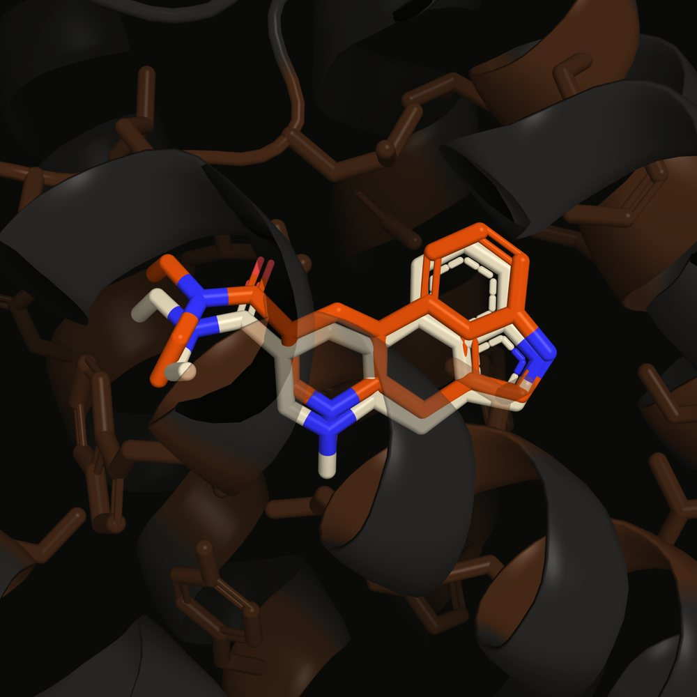
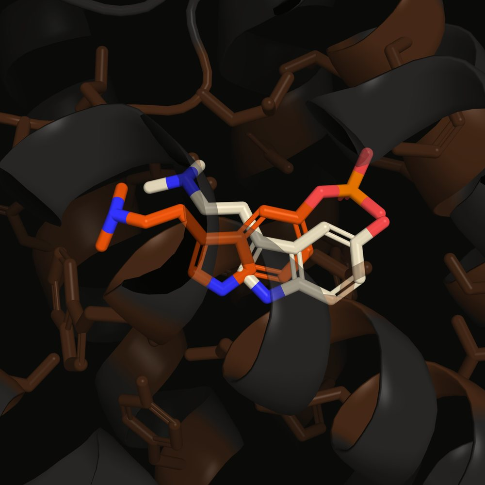

Psilocybin is a prodrug. The body strips its phosphate group to give psilocin, and psilocin is what reaches the receptor. Docked against 5-HT2A in a validated protocol, psilocybin scores 0.9 kcal/mol ahead, reproducibly. That reversal of the pharmacology points at what a docking score leaves out, and sets up the next experiment: the same pair in explicit water.
Before any comparison is worth reading, the setup has to reproduce something already known. 6WGT is a 5-HT2A structure with LSD bound. Pull that ligand out, dock it back into the prepared receptor, and see whether the pose comes back.
It does: RMSD 0.780 Å against a 2.0 Å pass threshold, and the redocked affinity lands at −10.073 kcal/mol against the −10.1 the same ligand scores in the blind screen. Box, receptor preparation and scoring are doing what they should.

LSD crystal pose (cream) and redocked top pose (orange) · binding-site residues within 5 Å in brown · PyMOL, from visualization/poses
Psilocin, psilocybin, serotonin, DMT, 5-MeO-DMT and LSD, each docked five times in a rigid receptor and again with flexible binding-site side chains. Points are means, bars are the seed-to-seed spread.
Seeds 42 · 123 · 456 · 789 · 1001 · exhaustiveness 16 · hover a point for its value
LSD sits more than two kcal/mol clear of everything else, which is what a high-affinity ergoline should do and another sign the setup behaves. Serotonin, the native agonist, lands mid-pack, below psilocybin and above psilocin.
Psilocybin outscores psilocin by 0.900 kcal/mol in the rigid model and 0.881 in the flexible one, against a combined seed-to-seed spread of about 0.175. That is roughly five times the noise, in both models, so it is a stable property of the scoring rather than a sampling artifact.

Top-ranked poses · psilocybin (orange, phosphate at right) · psilocin (cream)
| Ligand | Rigid | Flexible |
|---|---|---|
| LSD | −10.045 ± 0.021 | −10.070 ± 0.039 |
| Psilocybin | −7.837 ± 0.033 | −7.706 ± 0.121 |
| Serotonin | −7.083 ± 0.019 | −7.072 ± 0.061 |
| 5-MeO-DMT | −6.982 ± 0.018 | −6.688 ± 0.091 |
| Psilocin | −6.937 ± 0.021 | −6.825 ± 0.126 |
| DMT | −6.872 ± 0.054 | −6.657 ± 0.191 |
kcal/mol, mean ± SD across five seeds
Running it with flexible side chains was meant to test one explanation — that a rigid receptor was being overly generous to psilocybin's bulky phosphate group. Flexibility did not close the gap, which rules that explanation out.
The candidate left standing is desolvation. A charged phosphate picks up scoring credit for contacts it makes, while the energetic cost of stripping its water shell is not something a docking score models well. Testing that needs molecular dynamics in explicit water, not more docking variants.
Psilocin and 5-MeO-DMT swap places between the two models. The gap is 0.137 kcal/mol, comfortably inside the spread, so that ordering is not reported as a finding.
Nothing here measures binding. These are predicted affinities for a static pose from one scoring function, in a protocol validated against exactly one known structure. The useful output is a specific, falsifiable question for the next phase: does explicit solvent reverse the psilocybin–psilocin ordering?
An early run of the redocking check reported RMSD 5.107 Å because the parser read the last pose in the results file instead of the first. With the parser fixed and no re-docking, the same file gives 0.780 Å. The fix also applies to the SERT project, whose redock check passes at 1.515 Å.